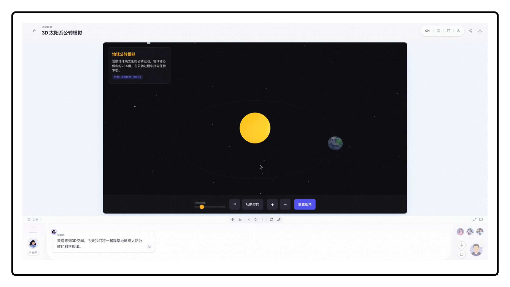
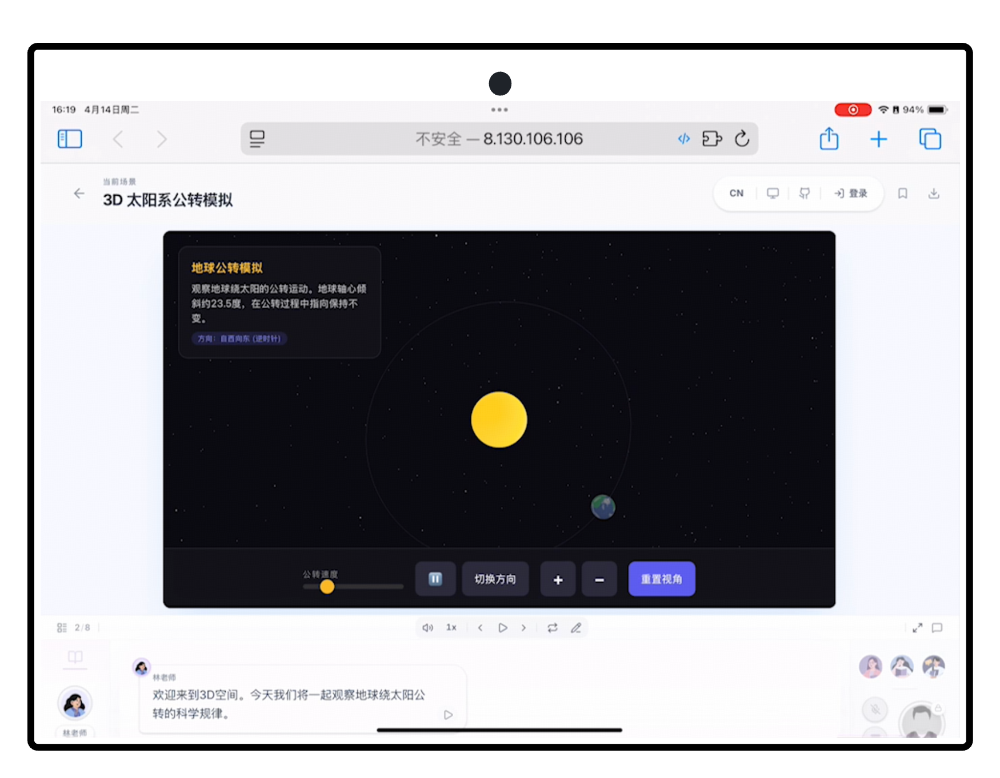
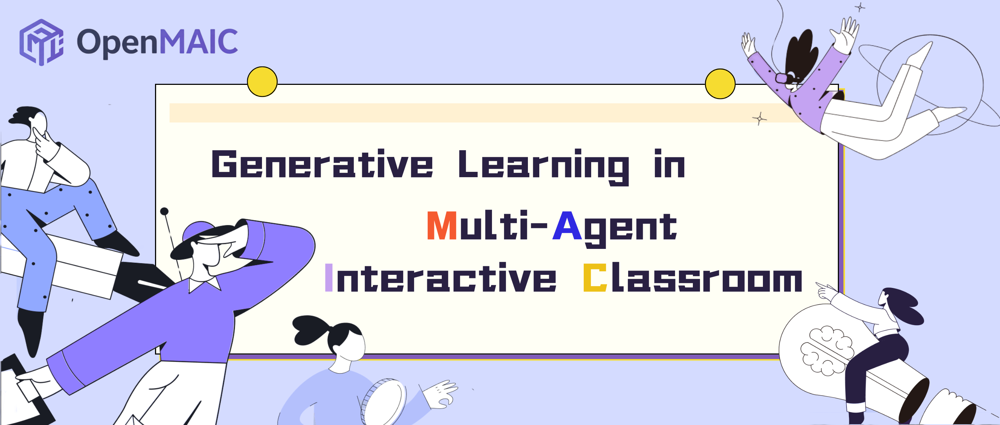

Read the whole visual field
01 / 20



Compare scale and hierarchy
02 / 20
Find repeated structures
03 / 20
Trace the primary path
04 / 20
Separate signal from decoration
05 / 20
Inspect alignment
06 / 20
Group related evidence
11 / 20
Test responsive changes
12 / 20
Locate persistent anchors
13 / 20
Locate changing details
14 / 20
Compare spatial priorities
15 / 20
Compare reading order
16 / 20
Form a visual hypothesis
17 / 20
Check the hypothesis
18 / 20
Record exceptions
19 / 20
Synthesize the evidence
20 / 20